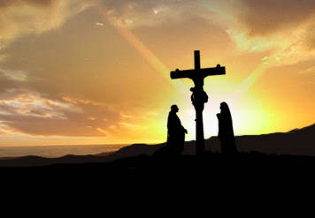
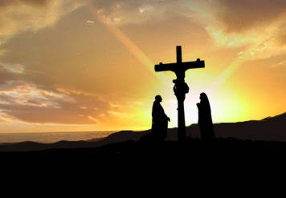
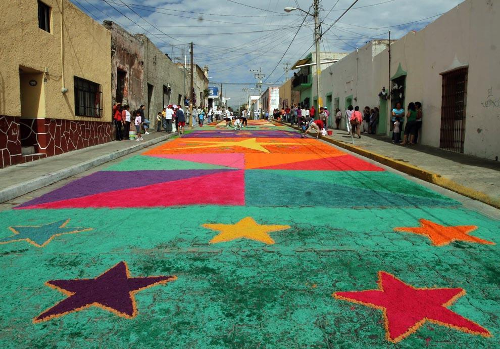
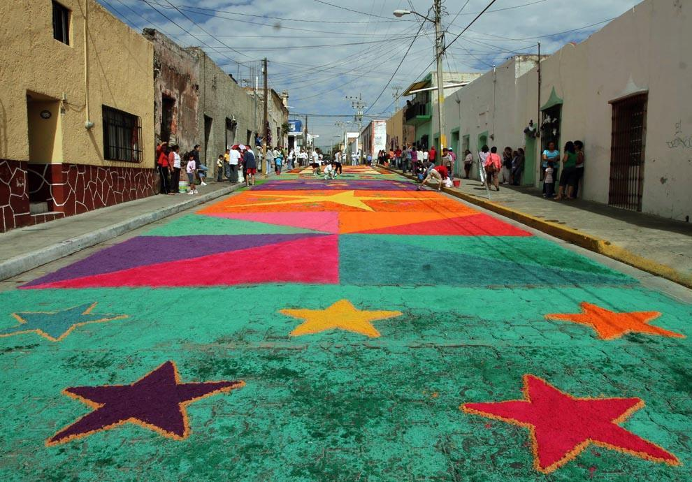

Celebracion de la semana santa
En que consiste la semana santa
La Semana Santa es la conmemoración anual cristiana de la Pasión, Muerte y Resurrección de Jesús de Nazaret. Por eso, es un período de intensa actividad litúrgica dentro de las diversas confesiones cristianas. Da comienzo el Domingo de Ramos y finaliza el Domingo de Resurrección,1 aunque su celebración suele iniciarse en varios lugares el viernes anterior (Viernes de Dolores) y se considera parte de la misma el Domingo de Resurrección. La fecha de la celebración es variable (entre marzo y abril según el año) ya que depende del calendario lunar. La Semana Santa va precedida por la Cuaresma, que finaliza en la Semana de Pasión donde se celebra la eucaristía en el Jueves Santo, se conmemora la Crucifixión de Jesús el Viernes Santo y la Resurrección en la Vigilia Pascual durante la noche del Sábado Santo al Domingo de Resurrección. Durante la Semana Santa tienen lugar numerosas muestras de religiosidad popular a lo largo de todo el mundo, destacando las procesiones y las representaciones de la Pasión. Los días más importantes de la Semana Santa son los formados por el llamado Triduo Pascual: La introducción al Triduo (el Jueves Santo y el Viernes Santo), en el que se conmemora la muerte de Cristo; Sábado Santo, en el que se conmemora a Cristo en el sepulcro, y el Domingo de Pascua de la Resurrección.
Dia de celebracion
DOMINGO DE RAMOS Se celebra la entrada triunfal de Jesús en Jerusalén. Es un anticipo de la Pascua. Los tradicionales ramos son los protagonistas. La primera lectura de la Pasión. Primeras procesiones populares.
LUNES SANTO Tras el esplendor del Domingo, la liturgia entra en la angustia de la pasión siguiendo los últimos días de vida de Jesús. El Evangelio nos presenta el episodio de la Magdalena lavando y ungiendo los pies de Jesús, con el escándalo de Judas. En él se han inspirado algunos pasos y procesiones
MARTES SANTO Se caracteriza su liturgia por la exaltación de la Cruz, que se propone como motivo de orgullo para los cristianos. El Evangelio de la misa de este día es la Pasión según san Marcos. En muchos lugares el protagonista de las procesiones de este día es la Cruz.
MIÉRCOLES SANTO Es el día en que se reúne el Sanedrín (el tribunal religioso judío) para condenar a Jesús.. Este episodio es el que convirtió los miércoles en días de ayuno. Hoy es el primer día de luto de la iglesia, en que se celebra el OFICIO DE TINIEBLAS, una especie de funeral por la muerte de Jesús. Los pasos y procesiones de este día reflejan el aumento del dramatismo
JUEVES SANTO Es, con el Corpus Cristi y la Ascensión, el primero de los Tres Jueves del año que relucen más que el sol. Es el día en que se celebra la ültima Cena en que Cristo instituyó la Eucaristía. Es el día del Lavatorio de los pies (sobre esto versa el Evangelio), de la atención especial a los pobres, del Amor Fraterno. Los pasos y procesiones se vuelcan en estas significaciones y empiezan a avanzar, ya en la noche, el misterio del Viernes Santo
VIERNES SANTO Este día constituye el núcleo central de la Semana Santa. Es el día del máximo dolor y de la muerte de Jesús. Es día de riguroso luto y no se celebra misa sino un rito de oración. Se lee la Pasión según san Juan, se reza por todas las causas en una continua ceremonia de arrodillarse (Flectamus genua) y levantarse (Levate), y en el centro de la celebración está la solemne adoración de la Cruz: “He aquí el leño de la Cruz del que pendió la salvación del mundo”. “Venid , adorémoslo”. Hoy es el segundo gran día de las procesiones en que se vuelca el dolor por la muerte de Cristo y el dolor de su madre.
SÁBADO SANTO Este día propiamente no hay culto oficial. Es día de luto por la muerte del Salvador. Continúa durante el día la visita de los monumentos, la celebración del Vía crucis y otras prácticas piadosas. Al anochecer empieza la gran Vigilia Pascual, que en su primera parte (bendición el fuego nuevo y del agua, lecturas, letanías, profesión de fe y Bautizos) corresponde propiamente al Sábado santo; pero la Misa de Gloria, solemnísima, con volteo de campanas y llena de aleluyas, corresponde a la celebración pascual de la Resurrección.
DOMINGO DE PASCUA DE RESURRECCIÓN La alegría iniciada en la misa de la Vigilia Pascual, que siempre es después de las 12 de la noche, la primera hora del domingo, se prolonga durante toda la mañana. Al mediodía vuelve a celebrarse una Misa solemnísima para celebrar la Resurrección. Aleqh CristoV aneste (Alezé Jristós aneste), En verdad, Cristo ha resucitado. Ese es el saludo pascual en la iglesia ortodoxa
 

Otras religiones como celebran la semana santa
Adventistas En el sentir de los adventistas, la Semana Santa es la conmemoración de la pasión de Cristo; sin embargo, los seis días los trabajan normalmente, además, no tienen prohibición para ingerir alimentos, aunque tienden a ser vegetarianos. “Nosotros nos ceñimos a la Biblia y en ella no dice en ninguna parte que debemos descansar; lo que se señala allí es que hay que descansar antes de la preparación, es decir, el viernes. El sábado es el día de nuestro culto. Y el domingo también oramos. “Un acto que reviste de mucha importancia es el lavatorio de pies, pero esto lo hacemos cada tres meses; adicionalmente, hacemos una cena con pan y con vino”, dijo Pedro Obando, adventista desde hace 40 años. Para los adventistas, “las estaciones del vía crucis son 14 crucecitas de madera, pegadas a las paredes de una iglesia. Los 14 cuadros representan varias escenas de la vida de Cristo camino al calvario que no son estrictamente necesarias. Fueron los franciscanos quienes iniciaron la devoción del vía crucis en Italia cerca al año 1350”, complementó.

Testigos de Jehová Los Testigos de Jehová consideran que la Semana Mayor es una fecha común; ellos celebran anualmente la muerte de Jesús, pero lo hacen según el calendario arameo. En la dicha reunión comparten vino y pan, tal como lo hizo el Señor en la última cena. “Nosotros celebramos la muerte de Jesús con una cena, cada año la fecha puede variar dependiendo del calendario arameo. “Durante la Semana Santa que llaman los católicos, los testigos de Jehová comemos normalmente, ya que consideramos que esos son días común y corriente. A parte de ellos no creemos en santos ni imágenes”

 
